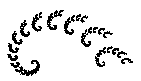
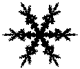

1.F. The Inverse Problem
Natural Fractals
With a bit of thought, now we can find an IFS to generate the tree. The fern is trickier. Click each picture for the answer.


Return to the
Inverse Problem
.